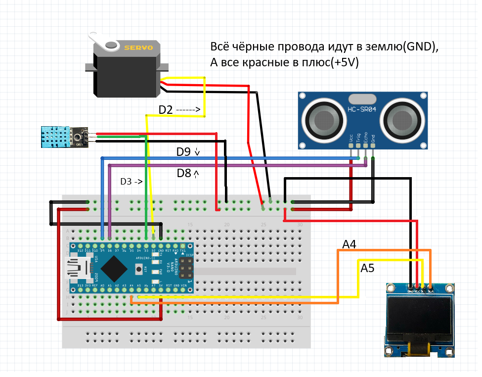

Описание:
Мусорка с авто открытием крышки когда обьект находтся в 10 см или меньше от неё и отображение температуры и влажности в комнате
Демонстрация работы
Инструкция по сборке:
Детали нужные вам для сборки:
Примерная стоимость всех деталей: 1 877 рублей
Всё ссылки можно найти тут
Приступим к сборке:
Все провода подписанны по номеру порта на ардуино, если вы начинающий в этой теме перейдите на гайд по базе для моих проектов.
На схемк все показано стерлочками и подписанно текстом, всё чёрные провода подлючаются в GND(Заземление), а все красные в плюс(+5v)
Схема в полной сборке будет выглядить как-то так:
Как выглядит электроника в корпусе:


Размеры корпуса:
Дно и криша 10х10см, высота вмесете с крышкой 18см. Можно сделать и свои размеры
Код:
Вот и закончилась наша сборка, приступим к коду, если вы незнаете как загрузить код на плату ардуино, то смотрите гайд по базе для моих проектов.
Нужные библиотеки: GyverOled, servo, DHT,
Если вы всё паравильно собрали то у вас всё должно заработать а если нет... можете писать в сообщения телеграм канала или в дс сервер по кнопкам ниже: